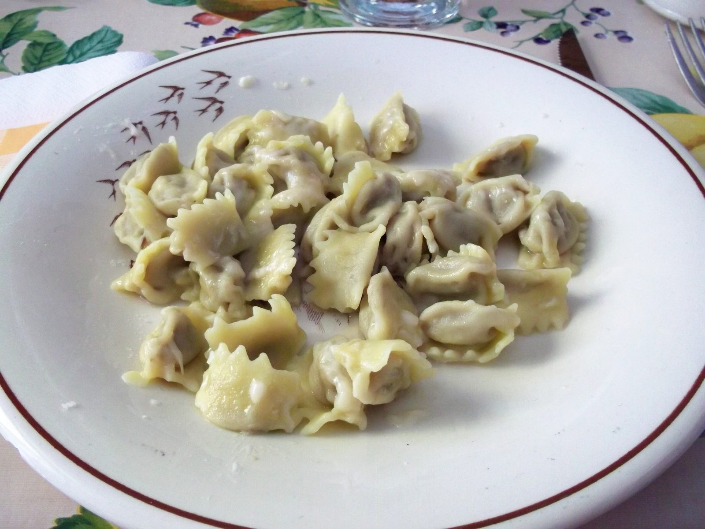
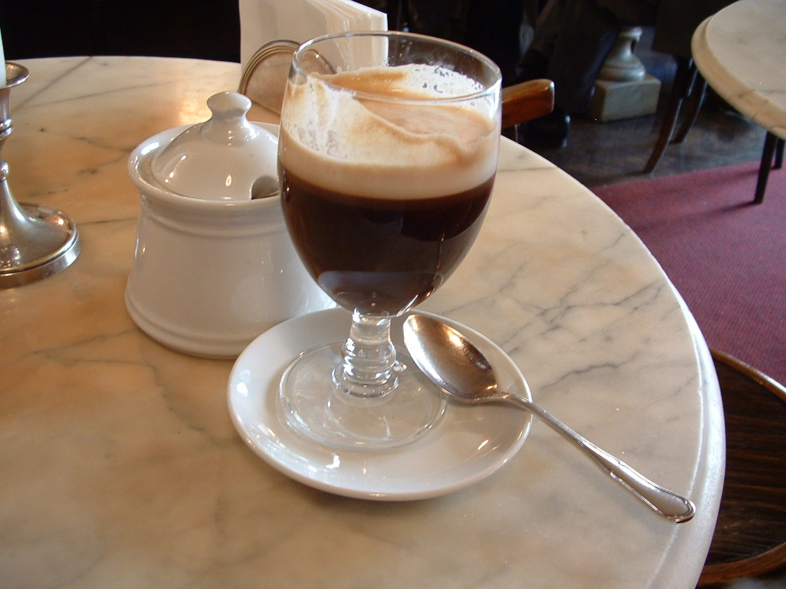
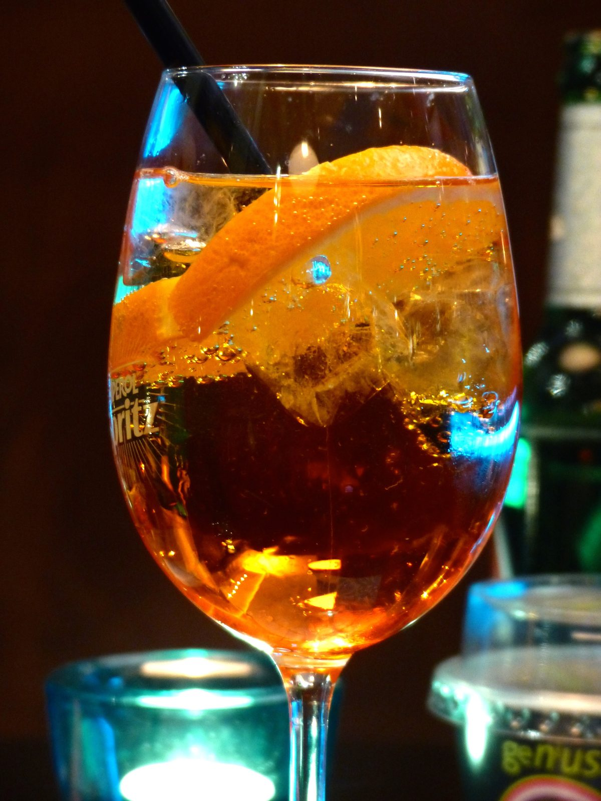
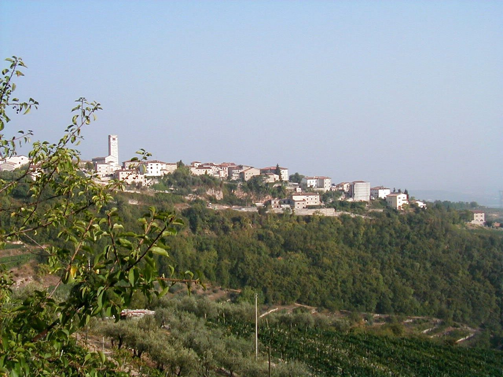

A differenza di un viaggio fatto di monumenti, qui il cibo non è un contorno. I posti concreti
stanno dentro le singole giornate, sotto "Dove mangiare": Torino,
Langhe, Verona e la
degustazione del Giorno 6. Questa pagina raccoglie invece i piatti e i vini da
riconoscere ovunque li troviate.
🍝 Piemonte, da Torino alle Langhe

- Salsiccia di BraDa non perdere, Giorno 1
Salume di carne bovina fresca (non stagionata), tipico del paese di Bra nel Roero: si mangia sia cruda sia cotta. A Torino, Crostone.it (Piazza Castello 72) la propone su crostoni gourmet — due terzi del menù è a base di questo salume. - Patate ripieneTorino, Giorno 1
Patate al forno farcite con topping all'italiana: il piatto street food diventato un simbolo cittadino, nato con il marchio Poormanger (Piazza Palazzo di Città e altre sedi in centro). - TajarinIl primo di Langa
Tagliolini sottilissimi all'uovo, conditi al sugo d'arrosto o, in stagione, al tartufo. Il piatto con cui si giudica una cucina di Langa. - Agnolotti del plin
Piccoli ravioli ripieni di carne (arrosto, coniglio, verdure), "pizzicati" a mano — da qui il nome. Si servono al sugo, al burro fuso o "al tovagliolo", asciutti. - Vitello tonnato
Fettine di vitello freddo con una salsa di tonno, capperi e maionese: un classico piemontese, spesso come antipasto anche d'estate. - Brasato al Barolo
Carne di manzo cotta a lungo nel vino: un piatto invernale per tradizione, ma le trattorie di Langa lo tengono in carta tutto l'anno. - BicerinTorino, Giorno 4
Caffè, cioccolata e crema di latte non mescolati, serviti in un bicchierino di vetro. Da provare da Baratti & Milano o al più storico Caffè Al Bicerin, dal 1763.
🍷 I vini di Langa

- BaroloIl "re dei vini"
Nebbiolo in purezza, tannico e longevo, dalle colline intorno all'omonimo paese. Il vino con cui si chiude qualunque degustazione seria in Langa. - Barbaresco
Sempre Nebbiolo, da un territorio vicino: più elegante e pronto prima del Barolo. - Dolcetto d'Alba
Il vino "di tutti i giorni" della zona: meno tannico, si beve giovane, perfetto con i salumi e i primi piatti. - Nebbiolo d'Alba
Lo stesso vitigno di Barolo e Barbaresco, ma in versione più semplice e pronta prima: un buon modo per capire il vitigno senza impegnarsi su un'annata importante.
Tartufo: fresco è una cosa d'autunno. Ad agosto le botteghe di Alba vendono prodotti conservati (creme, olio tartufato), non il tubero fresco — vedi Giorno 3.
🍝 Veneto, a Verona e in Valpolicella

- Risotto all'AmaroneIl piatto simbolo di Verona
Riso mantecato con il vino rosso della Valpolicella, spesso con midollo o formaggio Monte Veronese. Da provare a Verona, non altrove. - Pastissada de cavalValpolicella
Spezzatino di carne di cavallo, cotto a lungo con vino e spezie: piatto tipico della zona di Verona, spesso servito con la polenta. - Bigoli
Pasta lunga e ruvida, tipica del Veneto, spesso al ragù d'anatra o "in salsa" (con acciughe e cipolla). - Tortellini di Valeggio
Prodotti nel paese di Valeggio sul Mincio, poco fuori Verona: ripieno di carne, serviti tradizionalmente "in brodo nel fiasco". - SpritzL'aperitivo veneto
Prosecco, Aperol o Select, e soda. Nato proprio in Veneto: l'aperitivo giusto prima di cena a Verona.
🍷 La scala dei vini della Valpolicella

- Valpolicella (base)
Leggero, fruttato, si beve giovane e leggermente fresco: il vino "di tutti i giorni" della zona. - Ripasso
Lo stesso vino, "ripassato" sulle vinacce ancora umide dell'Amarone: più corposo, un passo intermedio verso l'Amarone. - Amarone della ValpolicellaIl vino simbolo della zona
Uve appassite per mesi prima della vinificazione: secco, potente, alto in gradazione. Si assaggia nella degustazione del Giorno 6, insieme al processo di appassimento. - Recioto della Valpolicella
Stesso appassimento dell'Amarone, ma la fermentazione si ferma prima: il risultato è dolce, da vino da meditazione o da dessert.
Nessun veto, a differenza di altri viaggi: qui non ci sono piatti banditi. L'obiettivo è trovare
i posti giusti per ciascuna di queste cose, non evitarne qualcuna.